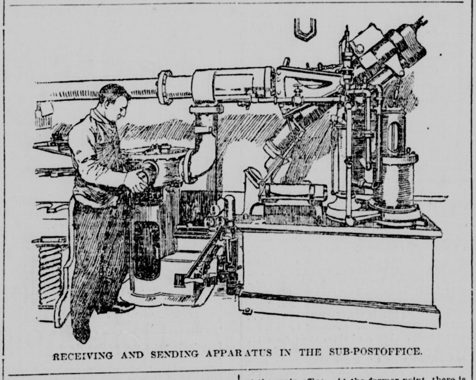
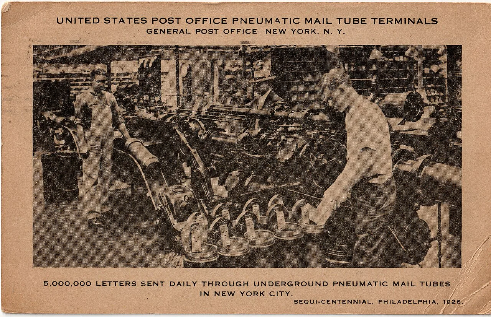
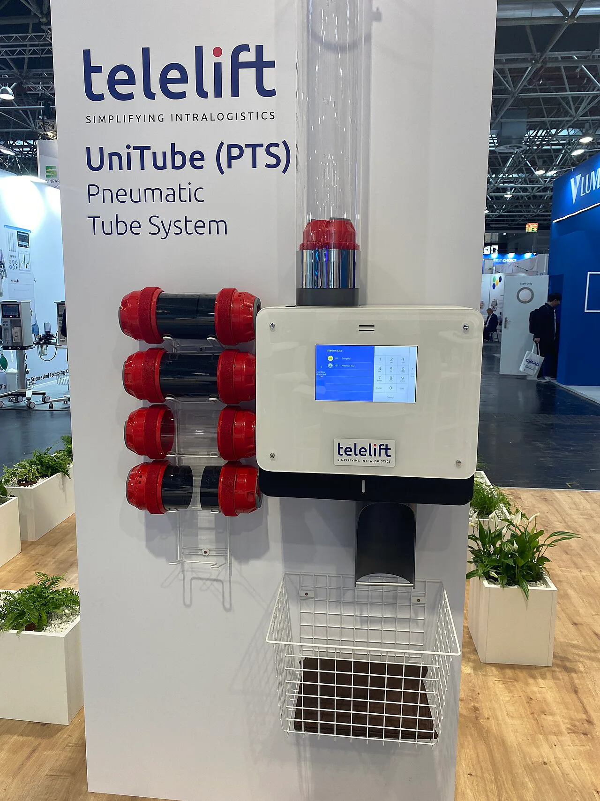

The problem was speed before electricity solved everything
Before email, fax machines, and cheap telephone networks, a city could have enormous information flow without an efficient way to move physical documents. Banks needed signatures. Newspapers needed copy. Post offices needed sorting. Hospitals still need samples to reach labs quickly. Pneumatic tubes turned a building or neighborhood into a pressure-powered delivery network.
The system was simple in concept and demanding in practice. A cylindrical carrier moved through a sealed pipe because fans or compressors created pressure differences. The trick was not only pushing the capsule. It was routing it, stopping it safely, preventing jams, and making the network reliable enough that workers trusted it with valuable documents.

Why tubes made sense
Pneumatic systems were fast, private, and predictable. They did not require a clerk to leave a desk for every delivery. They reduced the friction of moving paper inside complex organizations. In a bank, that meant documents could move between teller, vault, and back office. In a hospital, it still means blood samples, medicine, and paperwork can move without sending a person across multiple floors.
City-scale systems were more ambitious. Some postal systems experimented with underground tube networks because streets were slow, crowded, and vulnerable to weather. The same infrastructure logic appears again and again in urban history: when surface movement becomes unreliable, people look below, above, or inside walls.

Why they faded
Pneumatic tubes did not disappear because they were foolish. They faded where the thing being moved changed. Once messages became electronic, the value of moving paper quickly dropped. Maintaining sealed pipes, switching equipment, and station hardware made less sense when a phone call or digital message could do the job instantly.
They survive where the payload is still physical. Hospitals are the clearest modern example. The sample has to move. The medication has to move. A digital copy cannot replace the object. That is the pattern worth noticing: old technology often survives in the niche where its original constraint still exists.
The useful lesson
Pneumatic tubes are not just charming. They are a reminder that infrastructure is a negotiation between speed, cost, reliability, and the nature of the object being moved. If the object becomes information, electricity wins. If the object remains physical, the old pipe may still be the fastest route through the building.
A network needs rules, not only pressure
A single tube between two rooms is straightforward. A network introduces addressing, junctions, queues, maintenance, and error recovery. Workers need to know which station should receive a carrier, what can safely travel, how to package it, and what to do when a capsule does not arrive.
Those operating rules are part of the infrastructure. A fast pipe that loses samples or jams unpredictably is worse than a slower human courier. Trust grows from repeatable handling, tracking, and clear responsibility at each station.
Why hospitals remain the perfect niche
Hospitals combine vertical distance, urgent payloads, many departments, and round-the-clock operation. A laboratory sample often needs to move faster than a staff member can leave a clinical task and cross the building. The tube separates transport from the worker's walking time.
Yet not every specimen or medication belongs in a carrier. Packaging, leakage risk, agitation, temperature, and local clinical rules matter. The modern system succeeds because it is selective: the tube is one route inside a larger logistics network, not a universal answer.

Old technology can become invisible twice
Pneumatic tubes first became invisible because they ran behind walls or below streets. They became invisible again when digital communication made their original message-carrying role seem obsolete. Their survival in hospitals is a useful correction to the idea that technologies simply progress from old to new.
A technology persists when its constraint persists. The most revealing question is not “why did tubes disappear?” but “where is the payload still physical enough that a tube beats a screen?”